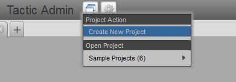
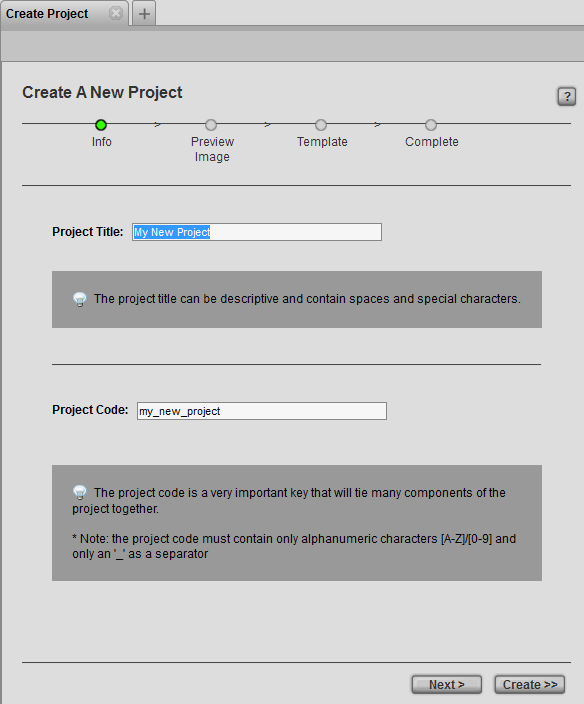
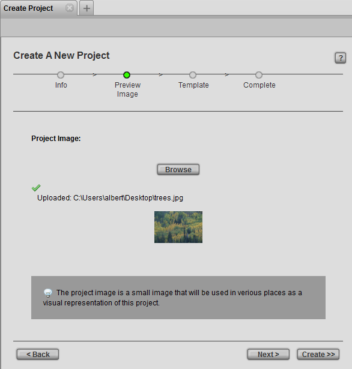
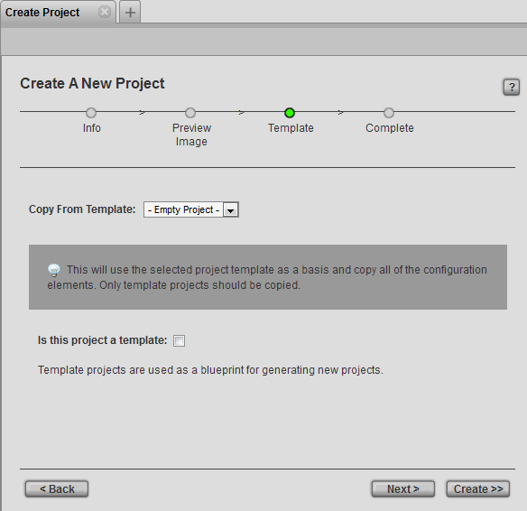
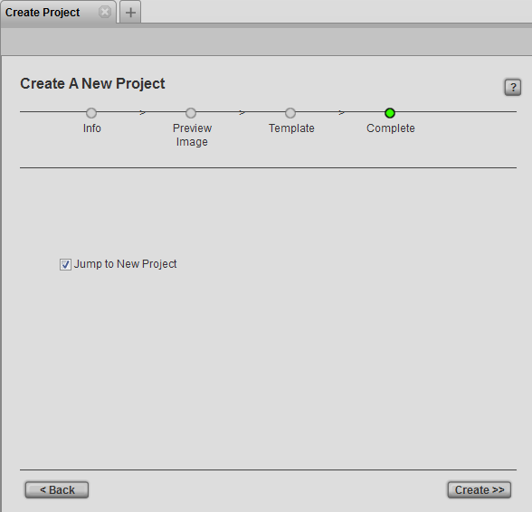
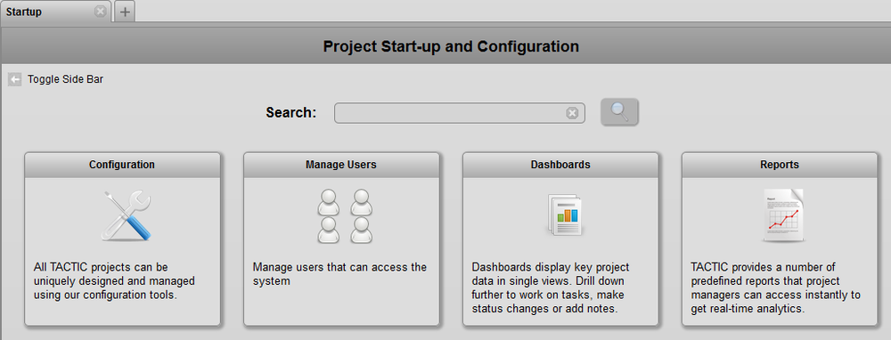

-include::../section/doc/tactic-setup/setup/what-are-projects/index.txt[]
-include::../section/doc/tactic-setup/setup/project-quickstart/index.txt[]
To create a new project in TACTIC, go to the top header and from the Project Menu, select Create Project. The Create New Project wizard will open.

In the Create New Project Wizard, specify the Project Title and hit tab to go to the next field. Notice that a suggested Project Code is automatically filled in. The Project Code can be changed but it must only contain alphanumeric characters and only an underscore as a separator. Click Next to continue specifying more details or click Create Project to create the project with the defaults.

Next, browse to select a thumbnail image to represent the project (optional):

Next, specify a template to use to create the project. Otherwise, the empty project will be used by default.
You can also pick a theme to use for your project. The theme specifies the display that your project uses initially. It defines the presentation layer when you open your project page. The admin side of the project is not affected by the theme you select.
Indicate if this new project will be used as a project template. (The default is no checkmark):

Finally, confirm and create the new project by clicking the Create button:

Create Project Options
Project Title | The Project Title is displayed in many places in the TACTIC interface. Choose a human readable string, like the full project title, so that it is understandable to all users. |
Project Code | A suggested Project Code is automatically generated once the*Project Title* has been entered. This code is a unique identifier for the project that should only contain alphanumeric characters or the underscore "_" character. This code is used in many areas in the database which tie all elements of the production together. For this reason, a Project Code cannot be changed after the project has been set up and saved after completing the wizard. |
Copy From Template | This option facilitates and speeds up the creation of a new project from an existing project. The Copy From Template option creates a new copy of all your project records to the new template project, such as asset libraries, task records, pipelines and workflow configurations. Once the new project has been created, the admin user can then make any additional modifications required to suit their new project. Please note that only template projects should be copied. |
Accessing Projects from a Web Browser
The new project can be access from the web browser using the URL:
http://(server)/projects/(code)/
For example, for a project with the code "test" on a server called "tactic", the URL would be:
http://tactic/projects/test/
Once the new project has been created, the Startup view will automatically appear. This view provides guidance on how to set up a project.

To continue through the Project Startup view, please see the doc titled Project Startup and Configuration.
Unlike most operations in TACTIC, when a new project is created, it is not easily undo-able. It not easily undo-able because of the following complex actions that took place:
\1. It creates the database for the project and copies the schema designated for this type of project.
\2. It creates project sites in the sites directory.
\3. It registers the site in TACTIC.
If a project is accidentally created, then it is best to delete the project immediately.

When a new project is created based on a template project, the following internal structure will be copied over:
search types and custom columns | [multiblock cell omitted] |
pipeline and task statuses | [multiblock cell omitted] |
notifications and triggers | The *notificaions*and *triggers*are copied over from the template. |
sidebar | The links of the views in the sidebar are copied over from the template. |
Note
The only difference between a project that is a template and a regular project is simply a checkmark in a column named is_template in the projects table.
To toggle the is_template attribute of a regular project, as the administrator go to:
Admin views → Site Admin → Projects
Add the column is_template and remove the Search Filters.
Notice that there exists the following view for convenience:
Admin views → Site Admin → Template Projects
Note
After a new project is created based on a template, any changes made to the template will not affect the new project.
ie. only the structure that existed in the template at the time the project was created will be used